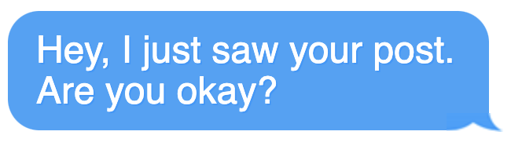
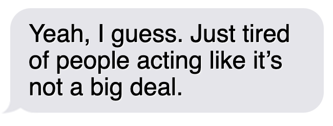
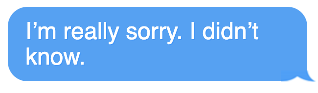
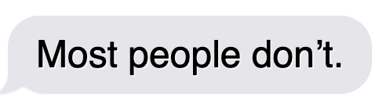

*Names have been altered to protect my friend's privacy
I was lying on my bed, scrolling through my phone like always, when I saw a post from Maya, a girl in my history class. It was just a simple black square with white text: “Just because you don’t see it doesn’t mean it’s not happening.” At first, I didn’t get it. No picture, no hashtags, no funny caption—just those words. I almost kept scrolling, but then I noticed the comments.
Some people replied with question marks, while others wrote things like, “This.” or "Real." A few kids even shared their own stories, while others shared not so nice comments, claiming she was only posting for attention. That’s when I realized what Maya was talking about: bullying.
I had never thought of Maya as someone who got bullied. She was quiet, sure, but she always seemed fine. But, this post, along with others I found on her feed or in her reposts, didn't seem like she was fine.
I felt a lump in my throat. I sat next to Maya in history almost every day. Had this been happening right in front of me? Had I missed it?
I started thinking back to the little things I’d seen—whispers, eye-rolls, kids laughing after she walked by. I had never really paid attention before. It wasn’t like anyone was pushing her into lockers or stealing her lunch money. But now I wondered, was that what she meant? That just because it didn’t look like a movie version of bullying didn’t mean it wasn’t real?
I hesitated for a while before finally tapping on the message button.
I stared at the screen, half-hoping she wouldn’t reply. But a few minutes later, the typing bubble popped up.
I didn’t know what to say at first. But then I thought about how I had sat next to Maya all year and never realized what she was going through.
 After that, we started talking more. At first, it was just through messages—sharing stuff from class, complaining about school. But then, in history, it felt natural to say, “Hey,” or ask if she wanted to work on an assignment together. It wasn’t like we suddenly became best friends, but she wasn’t just the quiet girl who sat next to me anymore.
The more we talked, the more I started paying attention—not just to her, but to everything. I noticed when someone was being left out of a group chat, or when a joke wasn’t really a joke. And the next time I saw someone whispering about Maya, I didn’t just look away—I spoke up.